3 Trade Area Analysis and GeoVisualisation
3.1 Learning Outcomes
In this hands-on exercise, you will gain hands-on experience on using KNIME and GAEK to to perform trade area analysis and visualisation.
By the end of this session, you will be able to:
importing and wrangling geospatial data by using appropriate data manipulation and geoprocessing nodes of KNIME and GAEK,
delineate trade areas by using appropriate proximity analysis and overlay operators of GEAK, and
analyse trade areas using spatial overlay functions of GEAK, and
visualise output of the geoprocessing and GIS analysis by using Geospatial View node of GAEK.
3.2 Trade Area Analysis: XBS Case Study
3.2.1 Setting the Scene
XBS is a well established local bank. It has a total of 30 branches scatter around the country. The bank is planning to launch a special low interest loan programme to help small- and medium-scale enterprises (SME) to improve the productivity of their workers. Before the scheme is launched, Richard Lim, the Senior Vice President of XBS Retail Banking would like to find out the numbers of SMEs located within the trade areas of XBS branches.
3.2.2 What is Trade Area Analysis
A trade area is the geographic area from which a business draws its customers. The size of a trade area depends on the variety of goods and services offered in the community and its proximity to competing retail markets. In most cases, consumers are willing to travel further to purchase high order goods, such as automobiles, furniture, recreational vehicles, and specialty items than they are to purchase lower order goods, such as clothing, drugs, groceries and gasoline.
Trade area analysis is a methodology, process or technique that provides a basis for understanding, visualizing and quantifying the extent and characteristics of known or approximated trade areas. It has been used by businesses to gain better understanding on the geographic extent and characteristics of business patronage, to assess business performance spatially, to perform competitive analysis, to evaluate market penetration and to identify market gap.
Prior to GIS age, trade area analysis was a very time-consuming process. A simple trade area study for a retail operation can easily take more than six months or a year to complete. Today, with appropriate and readily available geospatial data and open source tools like KNIME Analytics Platform and its Geospatial Analytics Extension (GAEK), it is now feasible to complete a trade area analysis in a very short time, potentially within one or two hours.
3.2.3 Framing the Problem and Collecting the Data
Three geospatial data are available for this study. They are:
- Locations of Banking facilities and their associated information (i.e. Banking)
- Location SME and their associated information (i.e. SME)
- Outline map of Singapore (i.e. CoastalOutline)
These data sets can be found on eLearn, in a single zipped file (i.e. Hands-on_Ex1b.zip). You are required to download the zipped file, save it into your local drive and unzip the file. Throughout this hands-on exercise, we will assume that these geospatial data are stored in the Hands-on_Ex1b sub-folder of the coursework repository for example ISSS626-AY2025-26Aug-workspace sub-folder of your local drive.
3.2.4 Getting Started
- Use the procedures you learned in earlier chapter, start a new KNIME workflow. Name the workflow Hands-on_Ex01b.
- Create a sub-folder in Hands-on_Ex01b folder. Name the sub-folder data.
- Place the unzipped files from Hands-on_Ex01b_data.zip in data sub-folder.
3.2.5 The Analytics Workflow
Flow diagram below shows the complete workflow of the analysis. It comprises three main sub-flows:
- Importing and wrangling geospatial data (Step 1-11),
- Delineating trade areas (Step 12-17), and
- Analysing with trade areas (Step 18-21)

It is important to note that the nodes are not linearly connection. Students should observe the flows carefully and if necessary refer to the workflow diagram from time-to-time.
3.3 Importing and Wrangling Geospatial Data
Geospatial data wrangling are the processes of cleaning, transforming, and structuring raw geospatial data into a usable format for geospatial analysis. They are usually performed after after the geospatial data have been imported. They involve handling issues like transforming projection, formatting inconsistencies, identifying and fixing dirty data and deriving new geospatial data to ensure data quality and accuracy for drawing reliable insights from the analysis.
3.3.1 Step 1: Importing banking data
In this step, GeoFile Reader of GAEK will be used to import Banking shapefile file into KNIME workflow.
Use the skills you learned from last exercise, import Banking shapefile into KNIME.
When Banking layer imported successfully, the Geodata table of GeoFile Reader node should look similar to the screenshot below.
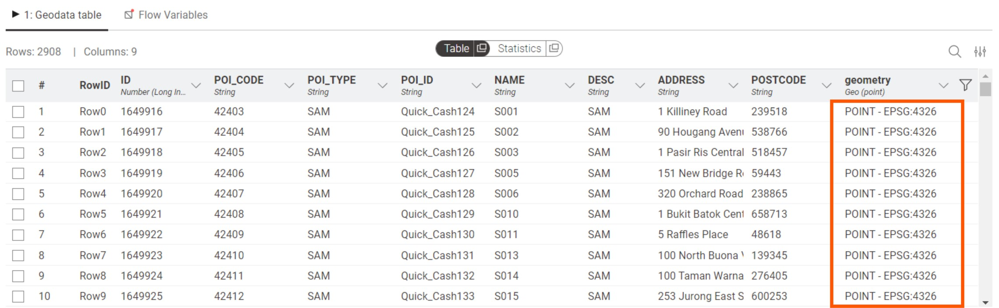
From the Geodata table of Banking, two data issues have been identified:
- it is in WGS 84 geographic coordinates system, and
- the data layer consists of more than XBS branches.
3.3.2 Step 2: Transforming projection
In this step, Projection node of GAEK will be used to transform the coordinates system Banking layer from WGS 84 to SVY21.
Use the skills you learned from last exercise, transform the projection of Banking layer to SVY21.
The Transformed geo table of Projection node should look similar to the screenshot below. It is in SVY21 Projected Coordinates System now!
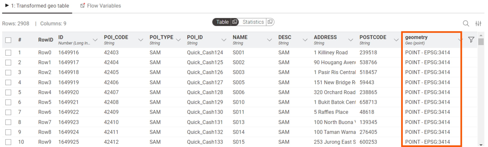
3.3.3 Step 3: Extracting XBS branches
The Banking layer consists of locations of banking facilities such as ATM, AXM, SAM and branches for several banks. We are only interested on bank branches belong to XBS. In this step, you will learn how to extract a subset of dataset from a master dataset using Row Filter node of KNIME.
Before you can perform attribute query, you need to examine the Banking layer careful and to identify the appropriate field and object name to filter.
- Click on
GeoFile Readernode.
The Geodata table window appears on Node monitor window.
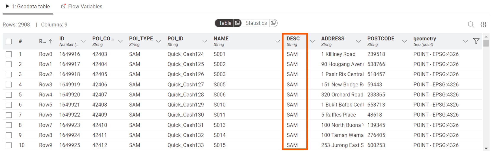
Notice that a total of 2908 rows and each row represents a geospatial point object, in this case a particular banking facility. For example, the first record represents a SAM machine.
If you scroll downwards, you will find that under the DESC field there are a collection of records with a description of XBS. This is actually the XBS branches.
Next, you will extract all the XBS branches using Row Filter node of KNIME.
- From left menu, click on Nodes.
- At the Nodes pane, click on Manipulation -> Row -> Filter.
- Double-click on
Row Filter.
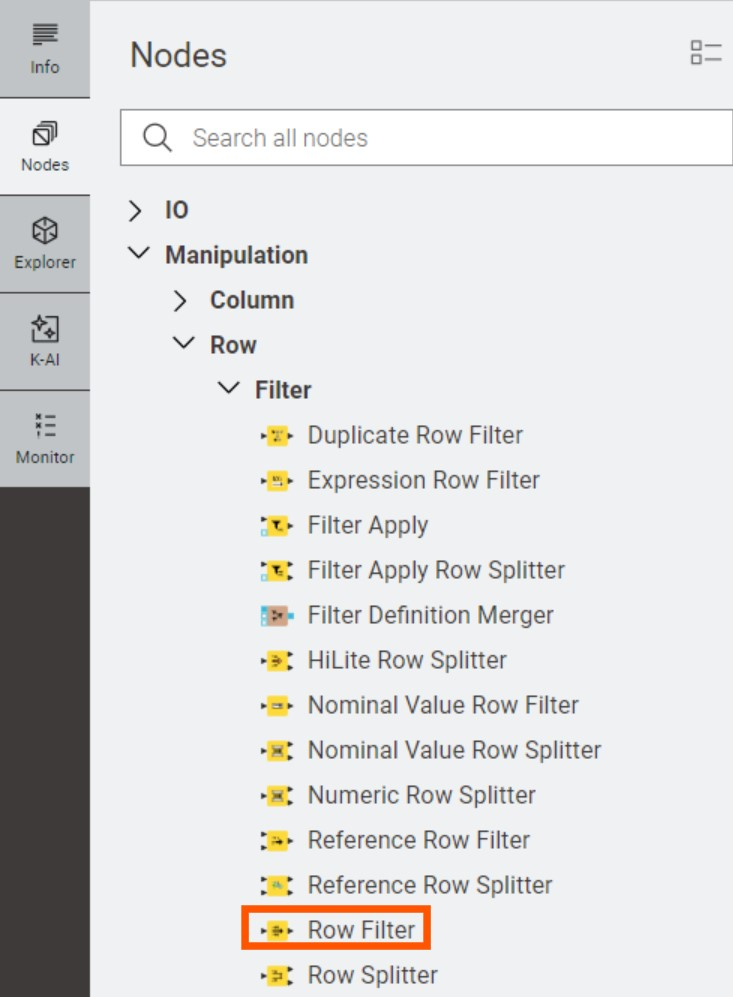
- On the
Row Filternode pane, complete the selections as shown below.
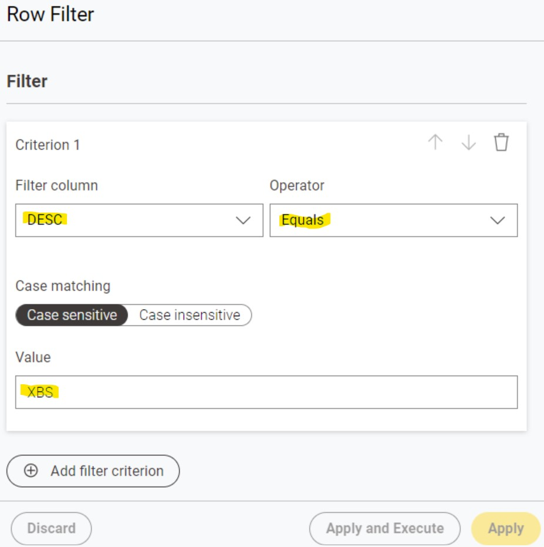
- Click on Apply button then follow up clicking on Execute button.
Your screen should look similar to the figure below.
Notice that there are only 30 rows in the output data table.
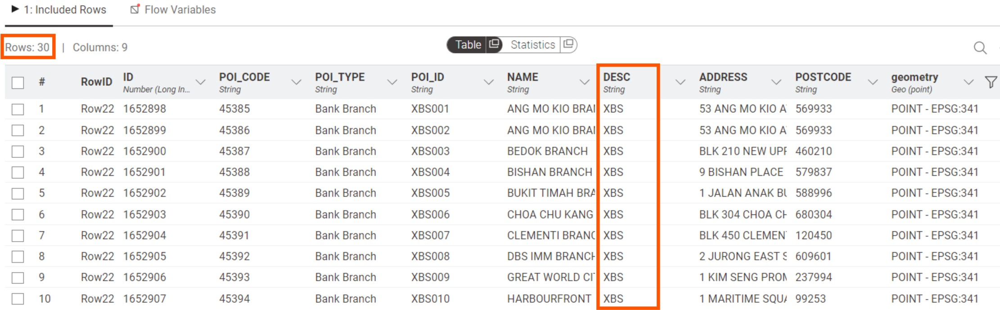
- Click on DESC column and verify that the values are all XBS.
3.3.4 Step 4: Visualising XBS branche locations
It is always a good practice to visualise the output after processing the data. In this step, Geospatial View node will be used to reveal the geographic distribution of XBS branches.
- From the left pane, click on Nodes.
- From the Nodes pane, click on Community Nodes -> Geospatial Analytics -> Spatial Visualisation.
- Double-click on Geospatial View.
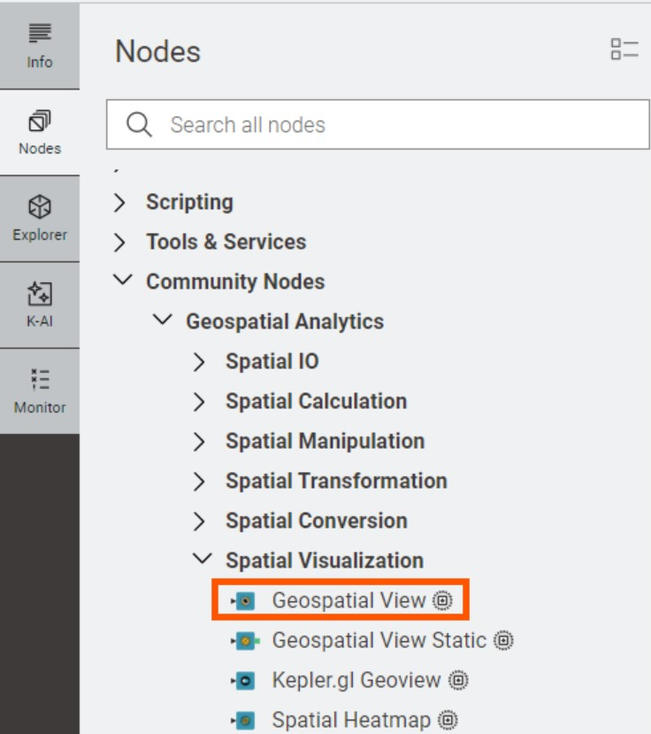
The Geospatial View node will be added on the KNIME workbench.
Connect
Row Filternode (Step 3) withGeospatial Viewnode (Step 4).Click on
Geospatial Viewnode to make it active.Refer to Geospatial View pane, for the Geometry column, make sure geometry is selected as shown.
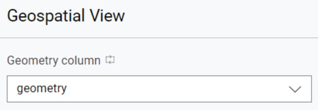
- To execute the node, click on Apply button then, follow by Execute button.
When the processing is completed, a point symbol map appears as shown below.
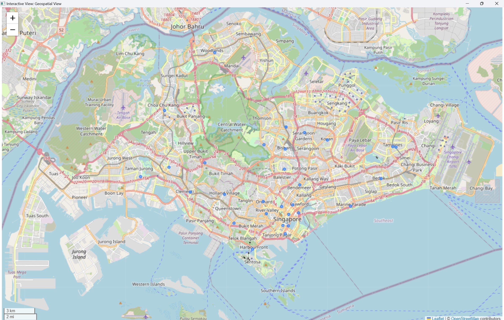
3.3.5 Step 5: Importing Singapore outline layer
In this section, you are required to import CostalOutline geospatial data int KNIME workflow. The data is in ESRI shapefile format.
Use the step you learned in earlier, import CostaOutline layer.
3.3.6 Step 6: Visualising CoastalOutline layer
It is time to visualise CoastalOutline layer on interactive map.
Use the step you learned in earlier to create an interactive map as shown below.
3.3.7 Step 7: Preparing Singapore outline layer
The plan is to use CoastalOutline layer as the extend boundary for deriving voronoi polygons (Step 15). However, the layer is far from satisfactory because there are many outer islands (refer to interactive map prepared in Step 6). In view of this, we will process the layer further by creating a 5-km dissolving buffer around the CoastalOutline layer.
Use the step you learned in earlier to create a 5-km dissolving buffer around CoastalOutline layer.
3.3.8 Step 8: Visualising the processed CoastalOutline layer
Now, let us have a look at the output layer after computing the dissolving buffer on CoastalOutline layer.
Use the step you learned in earlier to create an interactive map as shown below.
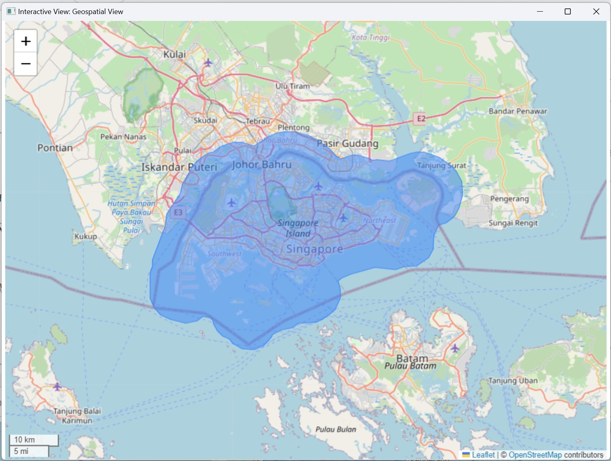
Notice that the output is a single polygon cover the entire Singapore mainland as well as the outer islands. This derived layer will be use for analysis purpose and not for claiming territorial.
3.3.9 Step 9: Importing SMEs data
Now, we are going to import the third geospatial data into KNIME workflow. It is SMEs data and is stored in ESRI shapefile format.
Use the step you learned in earlier, import SMEs layer.
3.3.10 Step 10: Visualising SMEs data
Similar to earlier steps, let us reveal the distribution of the SMEs by creating an interactive map.
Use the step you learned in earlier to create an interactive map as shown below.
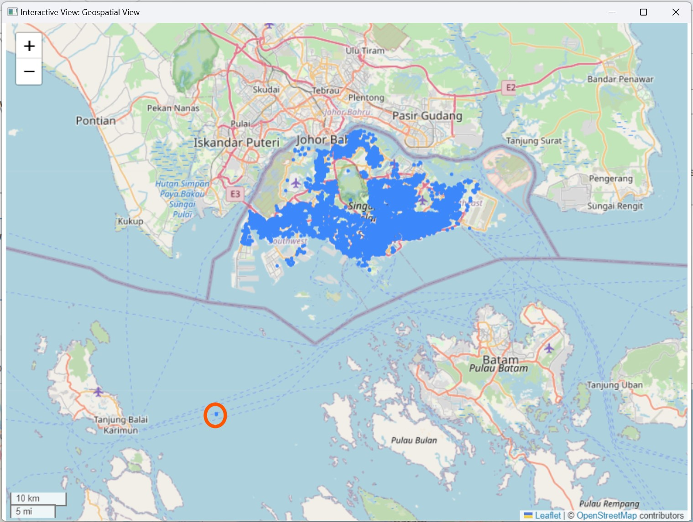
Oh no, the interactive map reveals that we have a serious data quality issue because there are several SMEs are located at in the sea (refer to the red circle).
There are many possible reasons caused this data quality issue. In real world practice, it is necessary to refer back to the data owner and find out what causes the issue and identify appropriate solution to address the issue.
In this exercise, we will simplify the procedure by excluding these data points from the analysis.
3.3.11 Step 11: Cleaning SMEs data
Since this is a geospatial data layer, a normal filter method will not be appropriate. To exclude SMEs located outside Singapore island, Clip node of SAEK will be used.
This node will clip target geometries to the mask extent. Both layers must be in the same Coordinate Reference System (CRS), otherwise, the CRS of the right table will be transformed to that of the left table. The geometries will be clipped to the full extent of the clip object. If there are multiple polygons in the mask geometry column, the geometries in the target geometry column will be clipped to the total boundary of all mask polygons.
- From left menu, click on Nodes.
- At the Nodes pane, click on Community Nodes -> Geospatial Analytics -> Spatial Manipulation.
- Double-click on
Clip.
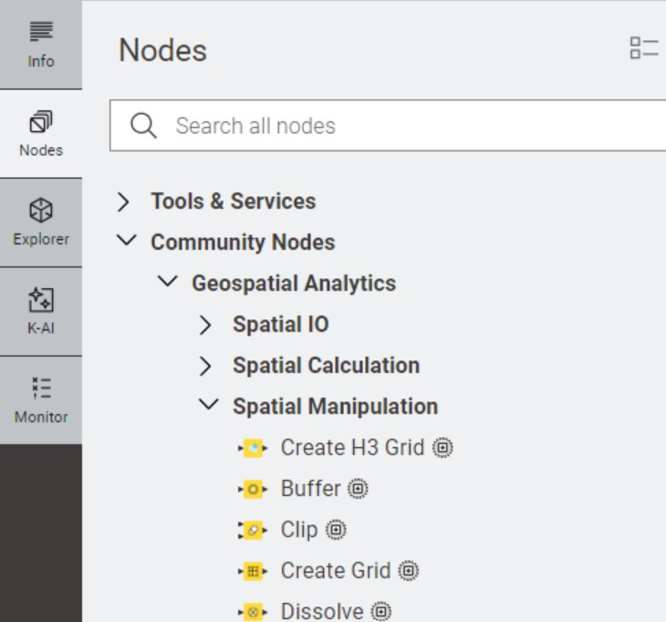
Since the target layer should be at the top node port,
- connect
GeoFile Readernode (Step 9) to the top node port ofClipnode (Step 11). - connect
GeoFile Readernode (Step 5) to the lower node port ofClipnode (Step 11). - click on
Clipnode to make it active.
The Clip pane located on the right of KNIME workbench should look similar to the screenshot below.
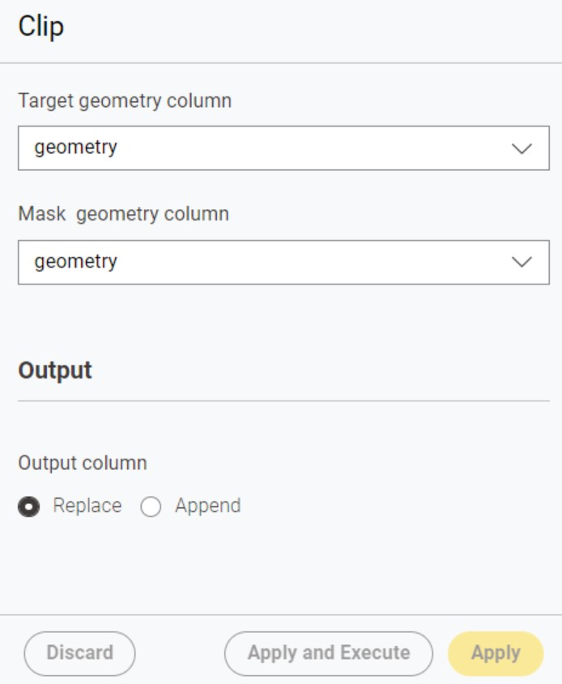
To execute the node,
- click on Apply button, then follow by Execute button.
The output view should look similar to the screenshot below.
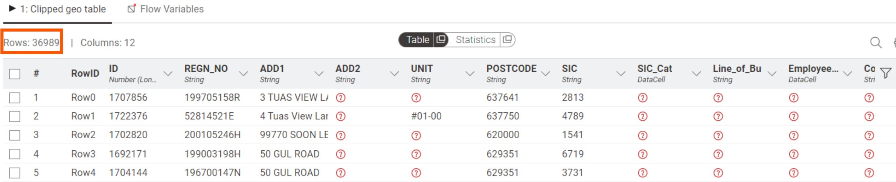
Notice that the number of rows have been reduced to 36989 from 39595.
3.3.12 Step 12: Visualising the cleaned SMEs data
It is also important for us to confirm visually the SMEs layer are indeed contained inside Singapore only. This can be achived by displaying the output on an interactive map using Geospatial View node of GAEK.
Use the step you learned earlier to create an interactive map as shown below.
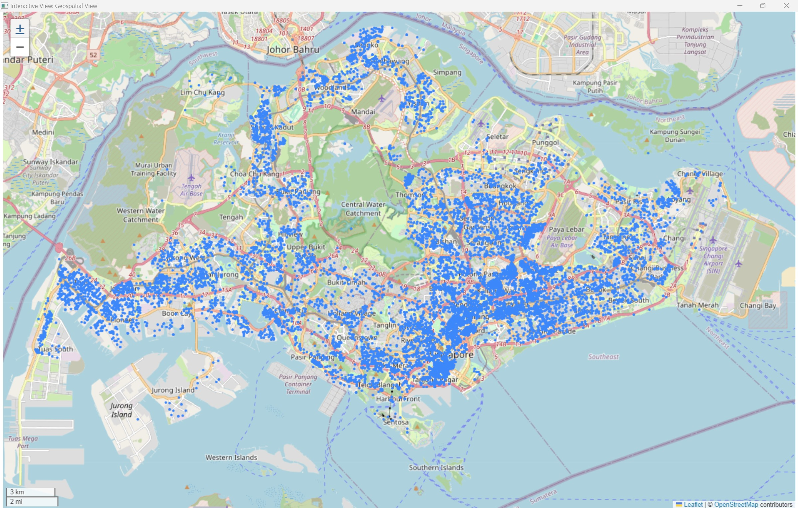
Notice that all the SMEs points are contained within Singapore island now.
3.4 Delineating Trade Areas with Geoprocessing Methods
Geoprocessing is a framework for performing analysis and managing geospatial data using a set of tools and workflows. It allows users to manipulate geospatial data by taking geospatial data as input, applying operations like buffering or overlaying, and generating new output datasets. Geoprocessing is used to automate geospatial data management tasks, perform complex spatial analysis, build custom tools, and share workflows within the geoscience community.
The buffer zone method is one of the quickest and simplest procedures for delineating a catchment area, representing the area by means of one or more concentric circles with the location at their centre.
In this method, each zone is determined by the radius of the buffer zone measured ‘as the crow flies’ as shown in the figure below.
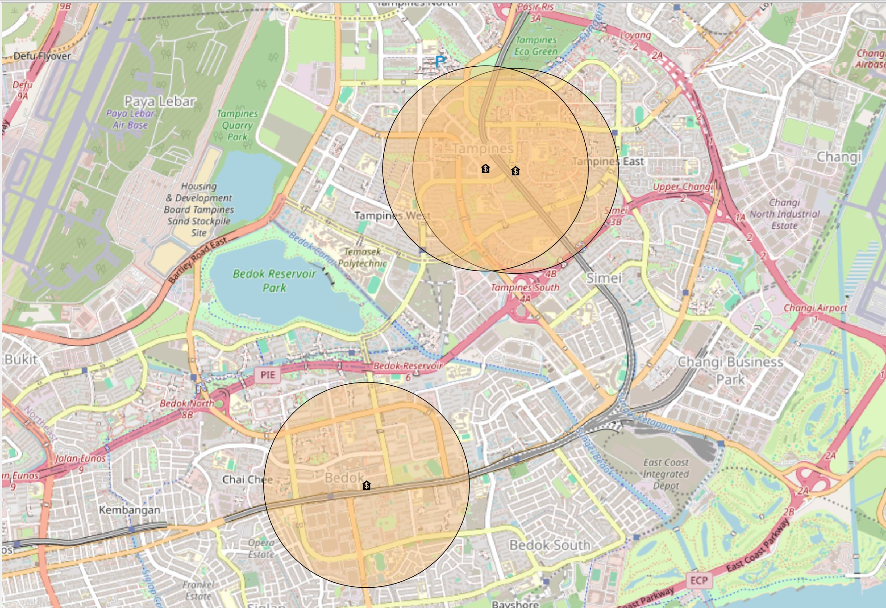
Under normal circumstance, single buffer works well as shown by the buffer located at the lower centre of the figure below. How even when there are two buffers overlap each other as shown below, the allocation of SMEs will not be mutually exclusive as shown below.
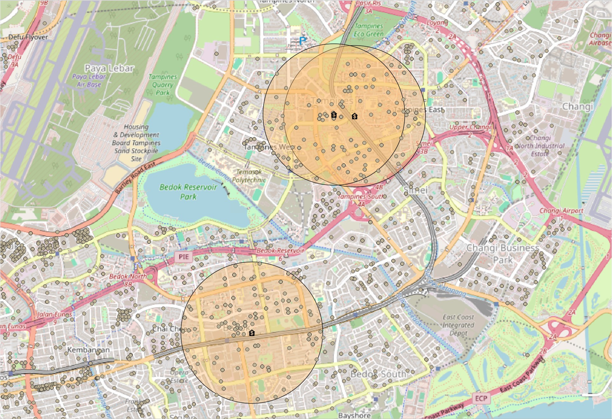
The possible solution is to split the overlapping buffers in such as a away that each SMEs will be assigned to its nearest XBS branch as shown below.
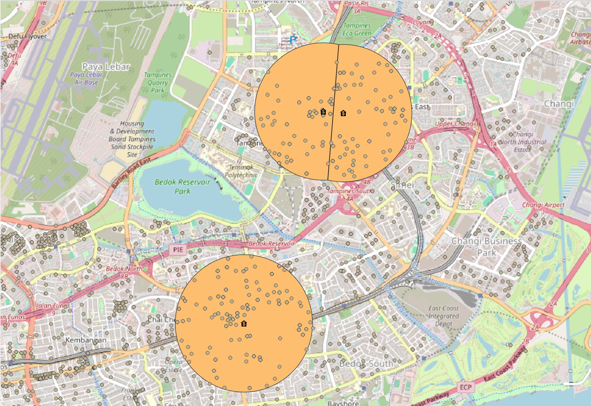
In this section, you will learn how to use three geoprocessing methods, namely dissolving buffers, voronoi polygons and overlaying to delineate mutually exclusive trade areas of XBS branches.
3.4.1 Step 13: Creating dissolving buffers
In this step, you are going to create a 1km buffer around the XBS bank branches. Typically, Buffer node of GAEK will be used. However, in our case, Multiple Ring Buffer node of GAEK will be used instead.
- From left menu, click on Nodes.
- At the Nodes pane, click on Community Nodes -> Geospatial Analytics -> Spatial Manipulation.
- Double-click on
Multiple Ring Buffer.
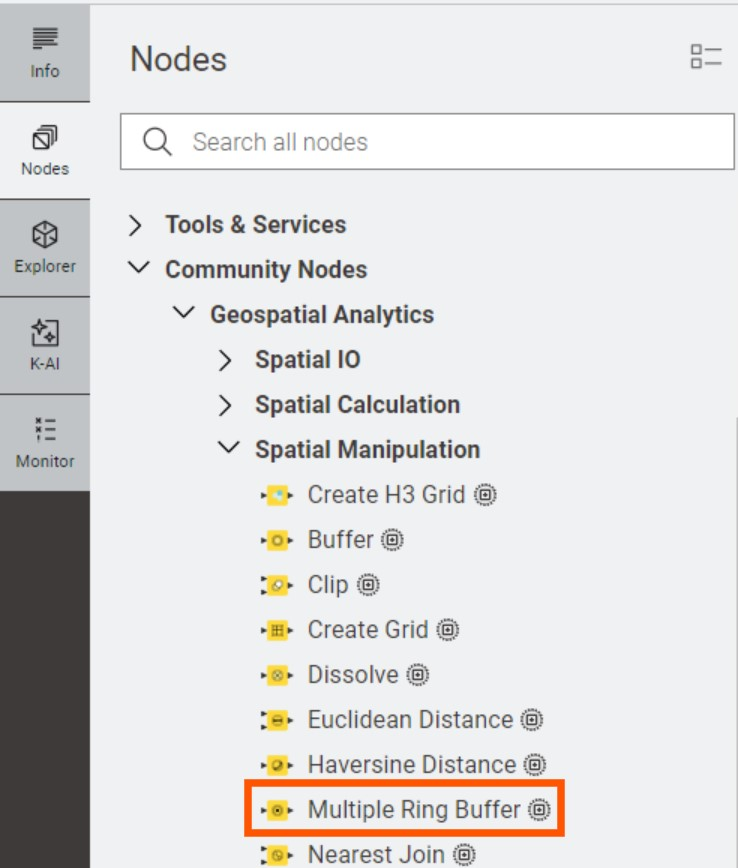
- On KNIME workbench, connect
Row Filternode toMultiple Ring Buffernode. - Double-click on
Multiple Ring Buffernode to make it active. - From the
Multiple Ring Bufferpane located on the right of KNIME workbench, complete the selection as shown below.
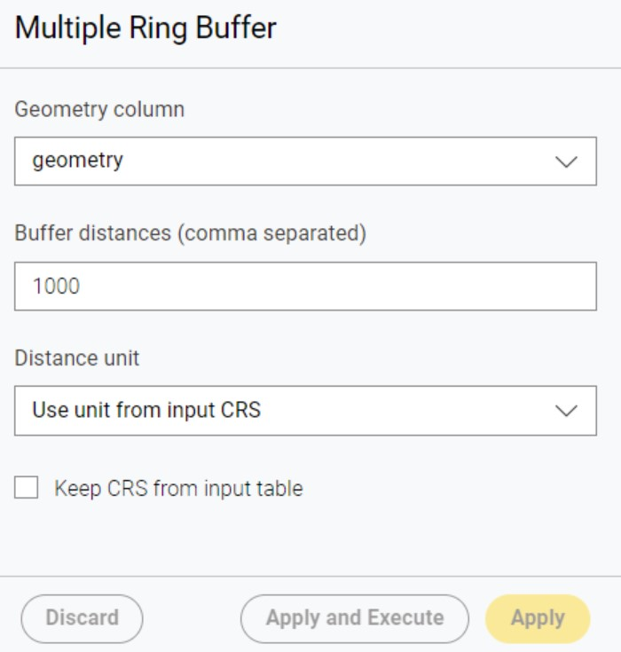
- Click on Apply button follow by Execute button.
When the process is completed, the output table should look similar to the screenshot below.
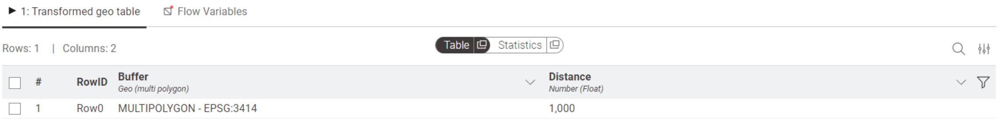
Surprise! There is only one geospatial polygon object created.
3.4.2 Step 14: Visualising the dissolving buffers
It is always a good practice the output of the geoprocessing. In this step, Geospatial View node will be used to create an interactive showing the merged ring buffer areas of XBS branches.
- From left menu, click on Nodes.
- At the Nodes pane, click on Community Nodes -> Geospatial Analytics -> Spatial Visualization.
- Double-click on
Geospatial View.
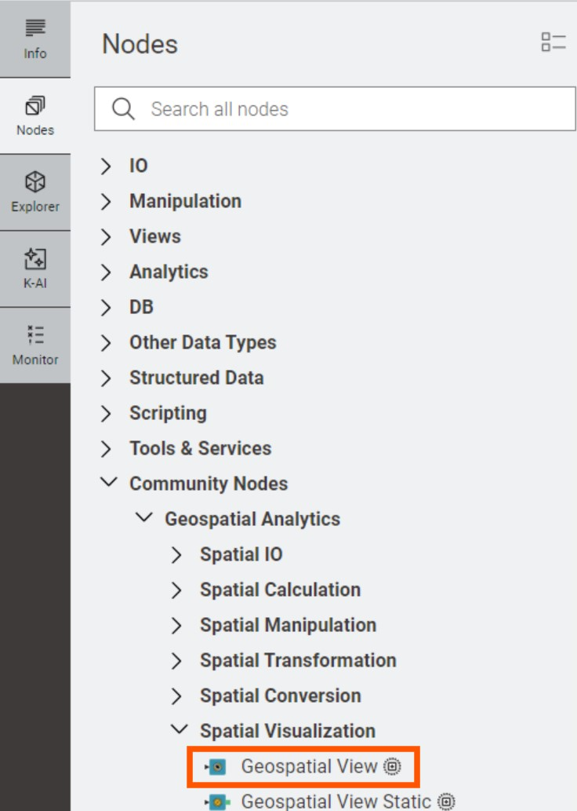
On KNIME workbench, connect
Multiple Ring Buffernode toGeospatial Viewnode.From the
Geospatial Viewpane located on the right of KNIME workbench, select Buffer from the drop-down list as shown below.
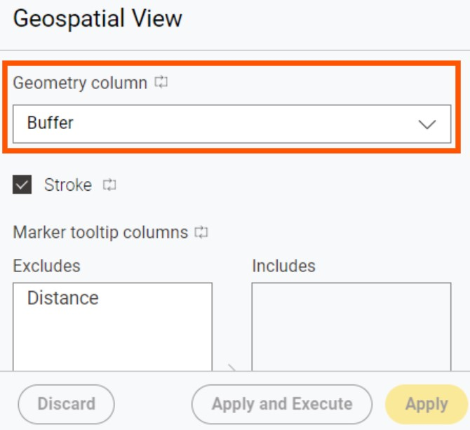
Click on Apply button follow by Execute button.
When the process is completed, at the View pane, click on
Open in a new windowbutton.
A new window pop-up showing the merged buffer areas of XBS branches.
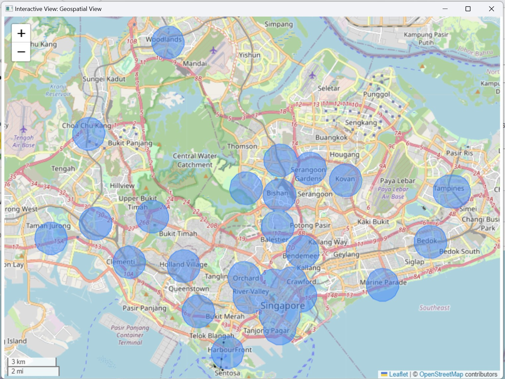
Notice that several trades areas have been merged into single large polygons. However, our analysis required each XBS branch has it own trade area. Our next challenge is to spit these large merged trade areas into individual trade areas.
3.4.3 Step 15: Creating voronoi polygons
Voronoi polygons, also known as Thiessen polygons, represent areas of influence around a set of focal points (or retail outlets as in this study). They can be generated based on a set of points as centroid for the polygons. Voronoi polygons have been so constructed that each polygon contains exactly one of the outlets and that any location with a Voronoi polygon is closer to that point outlet (centroid) than to any other point outlets.
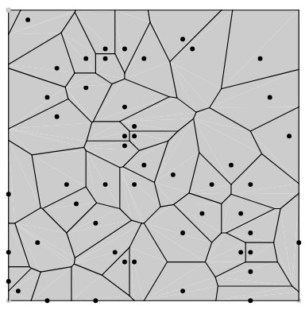
This polygon structure is constructed by using the perpendicular bisectors between neighbouring points (in this case, retail outlets) as the boundaries of the resulting Voronoi polygons.
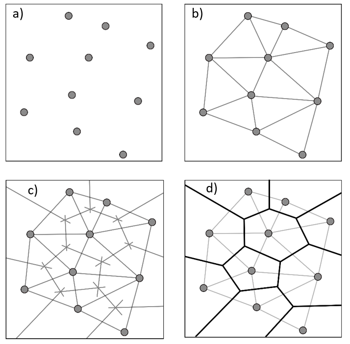
- From left menu, click on Nodes.
- At the Nodes pane, click on Community Nodes -> Geospatial Analytics -> Spatial Manipulation.
- Double-click on
Voronoi (Theessen) Polygonnode.
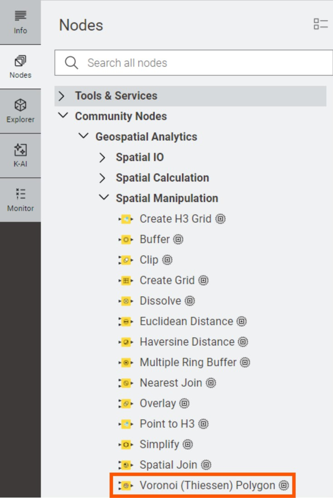
- Connect the output of
Raw Filter(Step 3) node to the top input port ofVoronoi (Thiessen) Polygon(Step 15) node. - Connect the output of Multiple Ring Buffer node (Step 7) to the lower input port of
Voronoi (Thiessen) Polygon(Step 15) node. - From the workflow, click on
Voronoi (Theisseon) Polygonnode to make it active.
The Voronoi (Thiessen) Polygons pane should look similar to the screenshot below. If it is not, refer to the screenshot below and update the missing or incorrect selection accordingly.
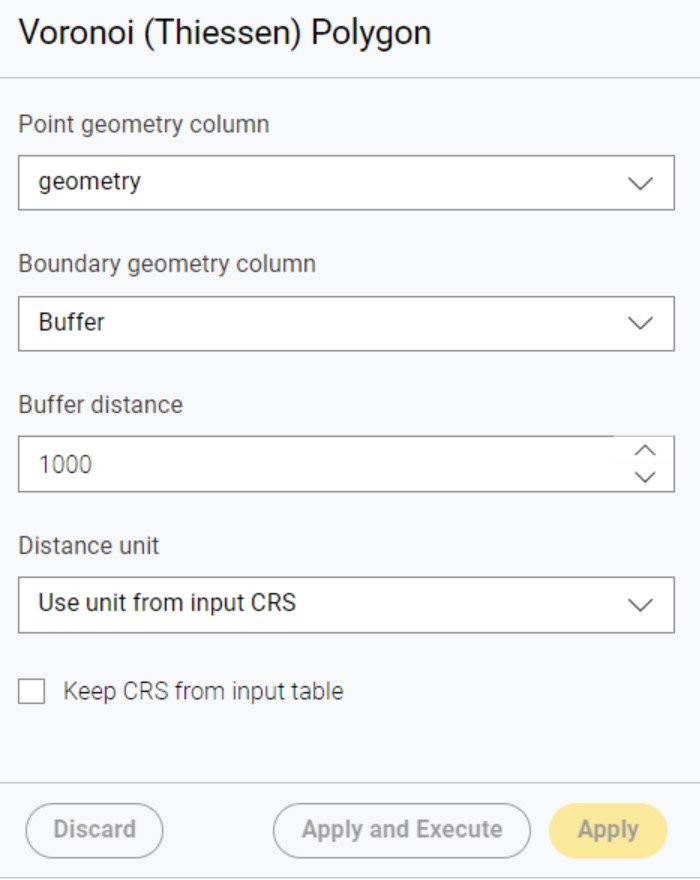
- To execute the node, click on Apply button then follow by Execute button.
Figure below shows the output table of Voronoi (Thiessen) polygons table. Notice that there are only 29 rows instead of 30 rows.
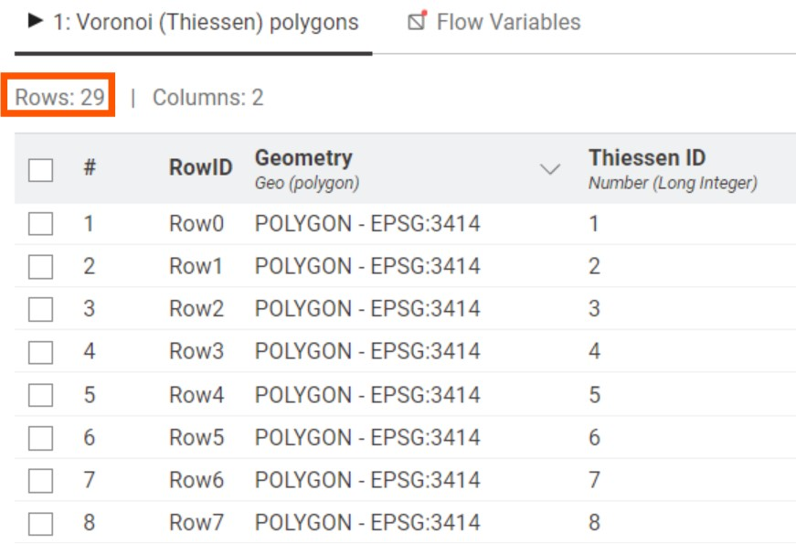
3.4.4 Step 16: Visualising voronoi polygons
Next, let us visualise the newly derived Voronoi polygon layer.
Use the step you learned earlier, create an interactive map showing the Voronoi polygon layer.
Your screen should look similar to screenshot below.
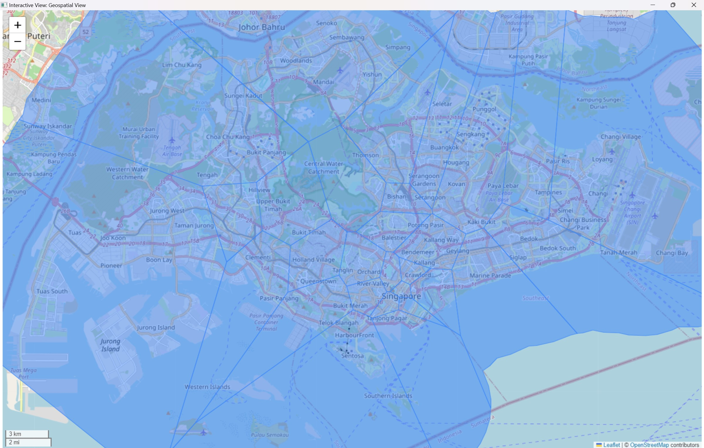
3.4.5 Step 17: Tidying trade areas
In this step, Overlying node of GAEK will be used to derive a composite trade areas by using the Dissolving buffer layer and the Voronoi (Thiessen) Polygon layer. The overlay operator used will be Identity.
- From left menu, click on Nodes.
- At the Nodes pane, click on Community Nodes -> Geospatial Analytics -> Spatial Manipulation.
- Double-click on
Overlay.
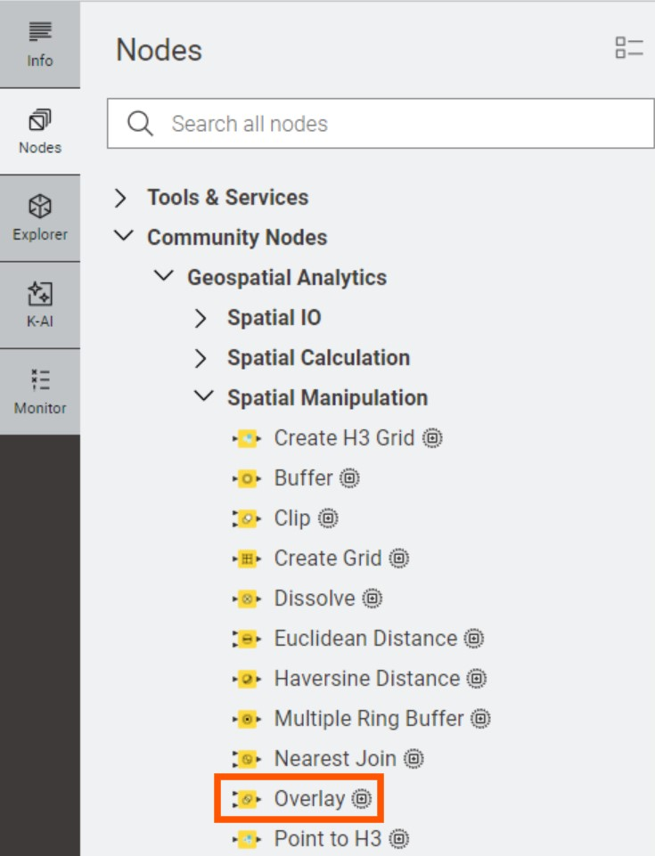
- On KNIME workbench, connect output of
Multiple Ring Buffernode (Step 13) to the upper input node port ofOverlaynode (Step 17). - Connect output of
Voronoi (Thiessen) Polygonnode (Step 15) to the lower input node port ofOverlaynode (Step 17). - Double-click on
Overlaynode to make it active. - From the
Overlaypane located on the right of KNIME workbench, complete the selection as shown below.
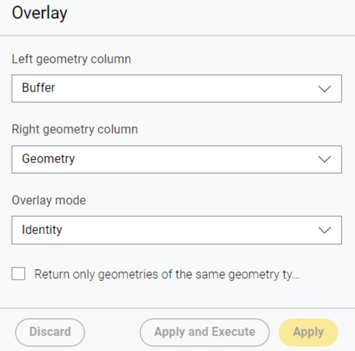
- To execute the node, click on Apply button then follow by Execute button.
When the process is completed, the output table should look similar to the screenshot below.
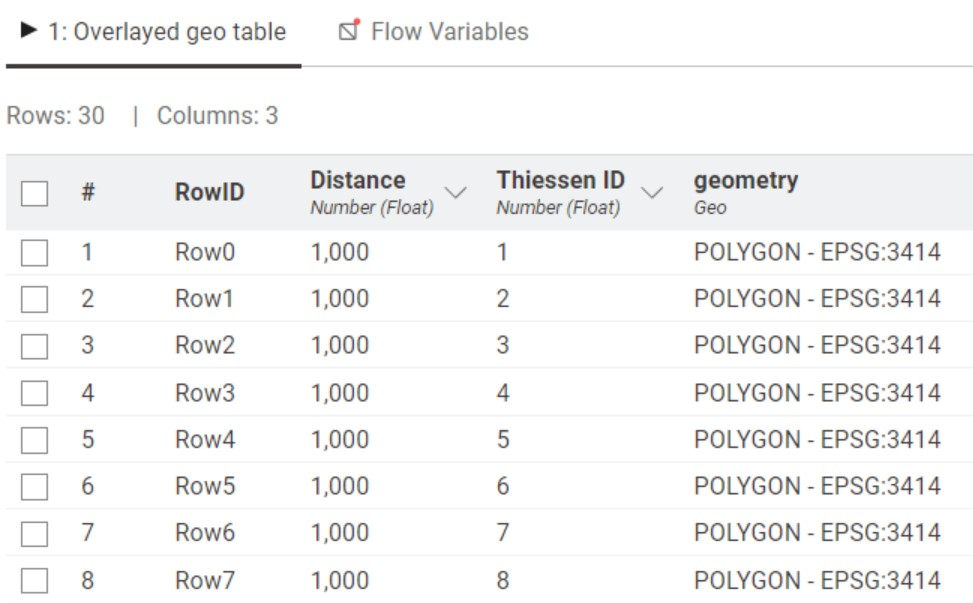
3.4.6 Step 18: Visualising the tidied trade areas
It is time to take a good look at the composited trade areas.
Use the step you learned earlier, create an interactive map showing the composite trade areas layer output from Overlay node (Step 17).
The interactive map should look similar to the figure below.
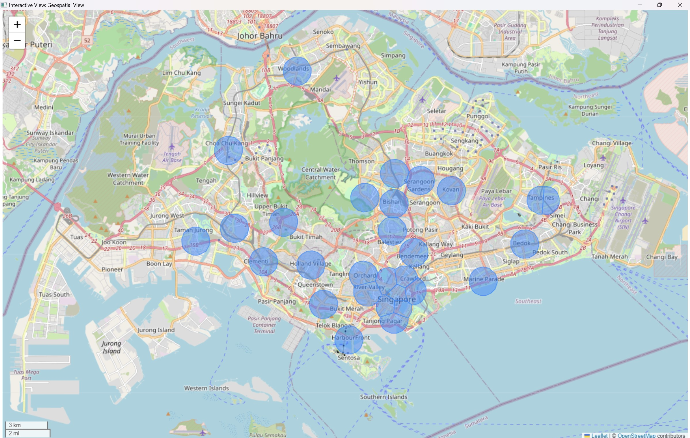
Notice that the multiple part buffer is split into 29 separate trade areas.
3.5 Analysing with trade areas
In this section, we would like to find out the numbers of SME fall within 1-km trade areas of XBS branches.
3.5.1 Step 19: Allocating SMEs to trade areas
In this step, we are going allocate SMEs to their respective trade area. This is going to be performed by using Overlying operation between the Cleaned SMEs layer and the Composite Trade Areas layer.
- On the Side panel navigation, click on Nodes.
- On Nodes pane, click on Community Nodes -> Geospatial Analytics -> Spatial Manipulation.
- Double-click on
Overlaynode.
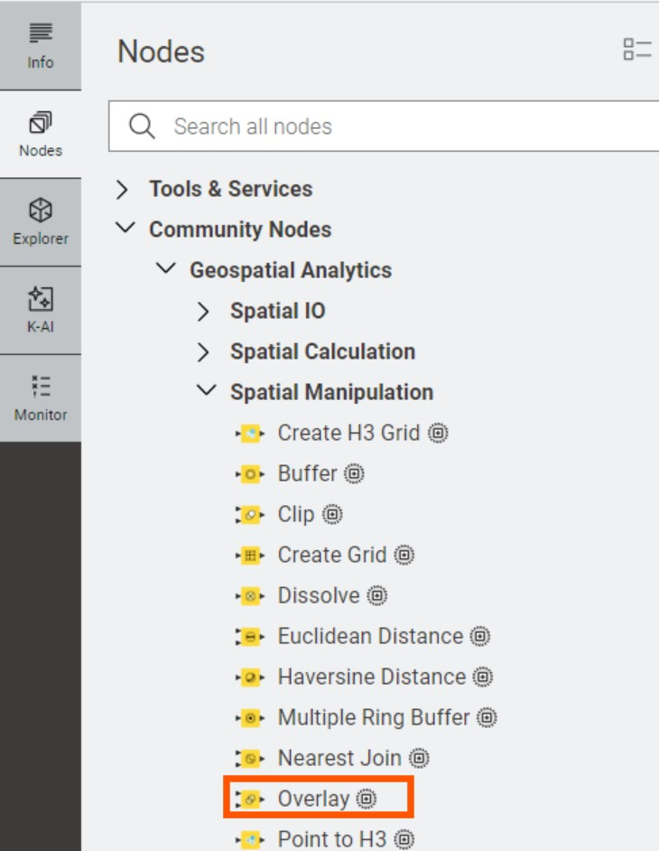
On the workflow view,
- connect the flow variable output port of
Overlaynode (Step 17) to the top input flow variable port of theOverlaynode (Step 19), - connect the flow variable output port of
Clipnode (Step 11) to the lower input flow variable port of theOverlaynode (Step 19). - click on
Overlaynode (Step 19) to make it active.
On the Overlay pane,
- confirm that the options selections are similar to the screenshot below. If necessary, change the selections by using their respective drop-down list.
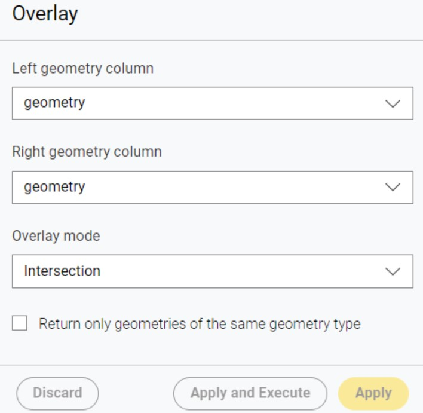
- Click on Apply button then follow by Execute button.
When the overlaying operation completed, the Overlayed geo table appears on Node monitor window as shown below.
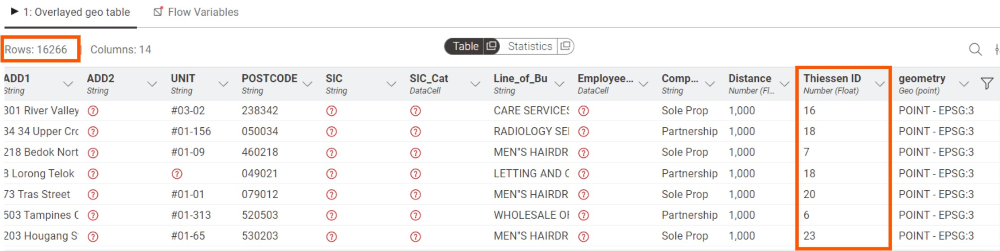
Describe two observations you can draw from the table above.
3.5.2 Step 20: Counting numbers of SME in each trade area
In his step, GroupBy node of KNIME will be used to count the numbers of SME allocate to the trade areas.
- On the Side panel navigation, click on Nodes.
- On Nodes pane, click on Manipulation -> Row -> Transform.
- Double-click on
GroupBynode.
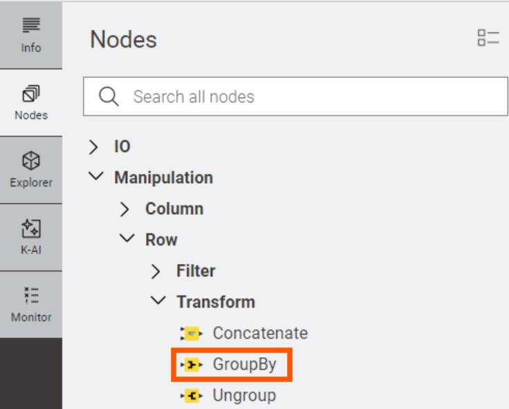
- On the Workflow editor window, connect
Overlaynode (Step 19) toGroupBynode (Step 20). - Double-click on
GroupBynode to open its dialog window.
By default, the Groups tab will be selected.
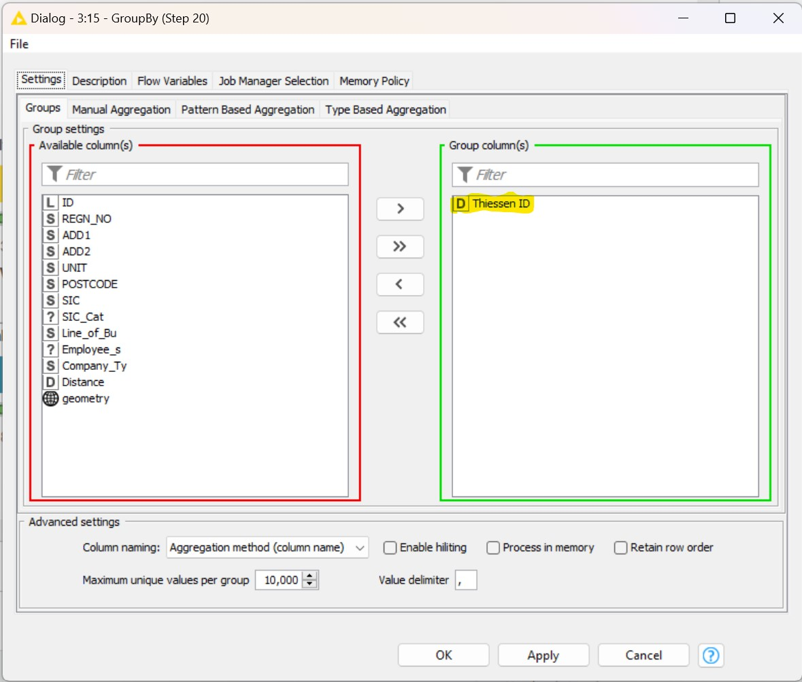
- Make sure Thiessen ID is listed in the Group column(s) pane.
- Next, click on Manual Aggregation tab.
- From the Available column(s) pane, click on ID.
- From Select pane, click on .
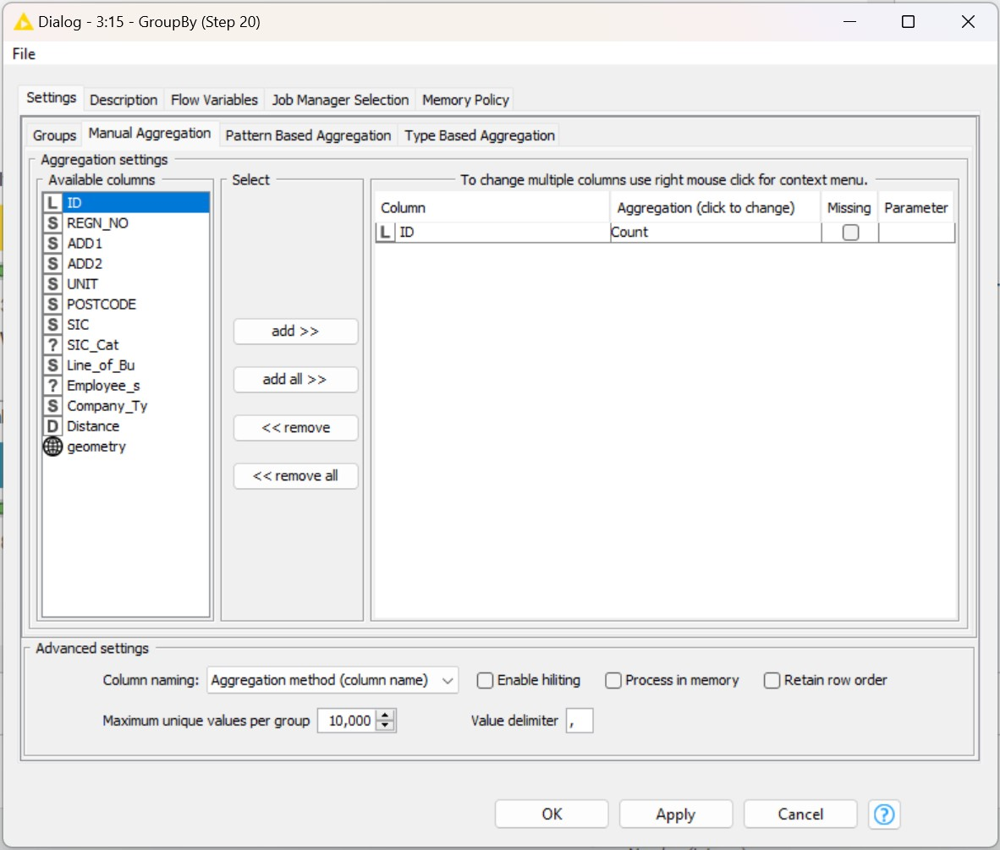
- From the Aggregation (click to change) column, select Count from the drop-down list.
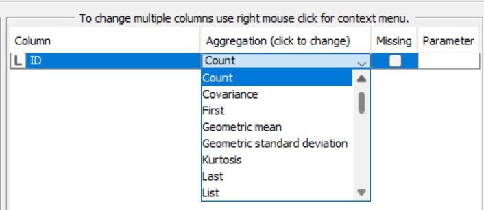
- To complete the selection, click on Apply button, follow by OK button.
The dialog window of GroupBy will be closed.
- Click on
GroupBynode, then click on the Execute button to execute the node.
When to computation completed, Group table of GroupBy node appears on the Node monitor window as shown below.
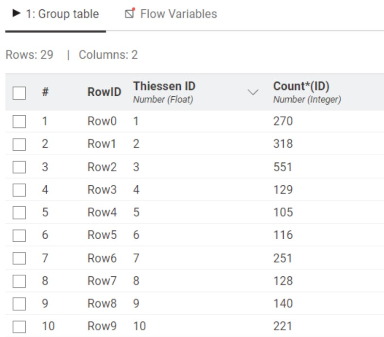
The table consists of two columns (excluding RowID column because it is internal to KNIME) and 29 rows, namely Thiessen ID and Count*(ID) whereby the values in Count*(ID) field indicate numbers of SME with the trade areas.
3.5.3 Step 21: Updating the trade areas layer
Before we can visualise the geographic distribution of SMEs serve by XBS branches, we need to append Count*(ID) column to the data table of tidies trade area layer. This is going to be performed by using Joiner node of KNIME.
- On the Side panel navigation, click on* *Nodes**.
- On Nodes pane, click on Manipulation -> Column -> Split & Combine.
- Double-click on
Joinernode.
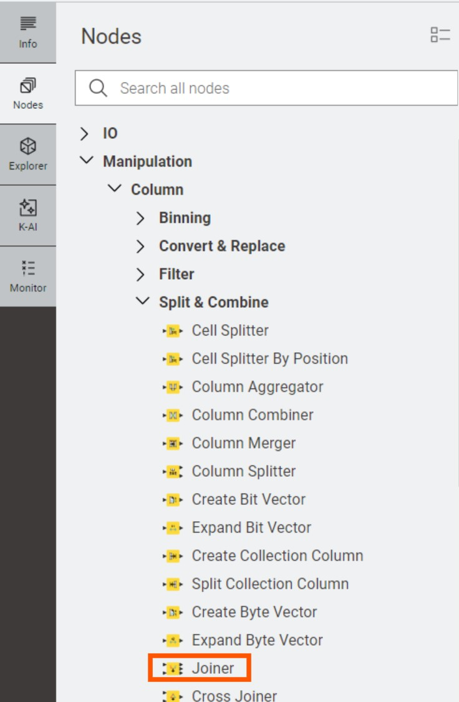
On the workflow view,
- connect the flow variable output port of
Overlaynode (Step 17) to the top input flow variable port ofJoinernode (Step 21), - connect the flow variable output port of
GroupBynode (Step 20) to the lower input flow variable port of theJoinernode (Step 21). - click on
Joinernode (Step 21) to make it active. - From the Joiner node pane, complete the options as shown below. For the remining options, keep the default selections.
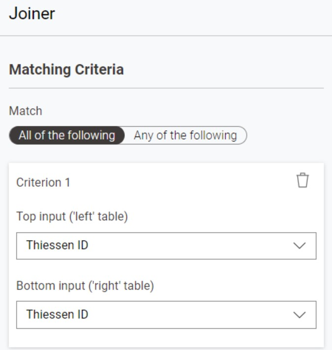 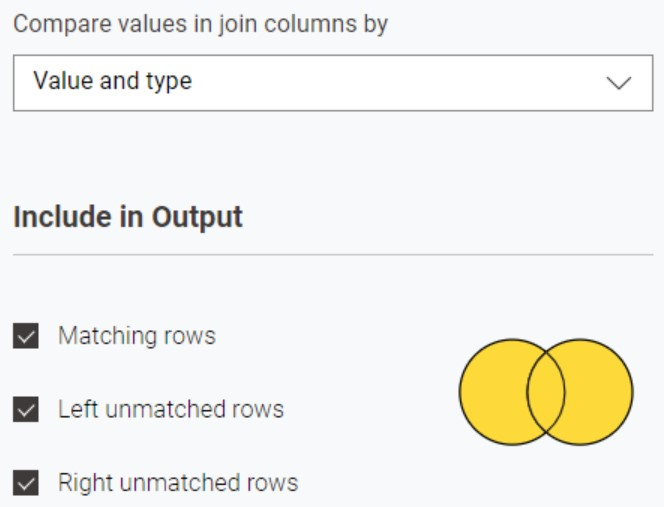
- When you are ready to run the operation, click on the Apply button follow by Execute node.
When the processing completed, the Join result data table appears on the Node monitor window as shown below.
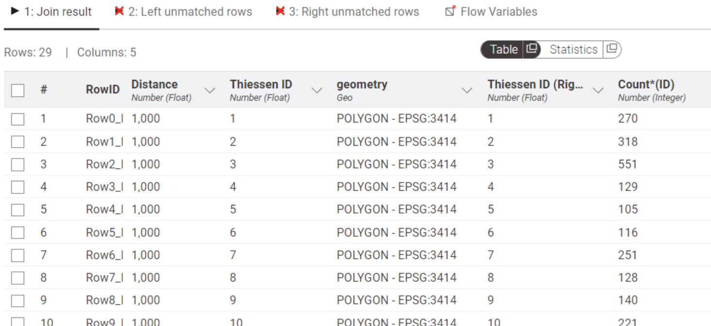
3.5.4 Step 22: Visualising the geographic distribution of SMEs served by trade areas
Lastly, Geospatial View node will be used to create a choropleth map to visualise the geographic distribution of SMEs by trades areas.
Choropleth mapping involves the symbolization of enumeration units, such as countries, provinces, states, counties or census units, using area patterns or graduated colors. For example, a crime analyst may need to use a choropleth map to portray the spatial patterns of household income distribution of Singapore by DGP (Development Guide Plan) Subzone.
The major concerns of choropleth mapping are the method of data classification, areal symbolization, and the overall map design. General rules for choropleth mapping are as follows:
- Use data that are assumed to be uniform throughout an enumeration unit.
- Because enumeration units vary in size, do not map totals. Use derived values, such as ratios, rates, proportions, or percentages.
- The best classing method depends on the data, the map reader and the purpose of the map.
- When classifying data, the full range of data must be included and class values should not overlap. No more than six classes are recommended.
- Class symbols (i.e. colors or patterns) must be easily distinguishable.
In this step, Geospatial View node will be used to create an interactive choropleth, however, the options selections will be different slightly.
- From Side panel navigation pane, click on Nodes.
- At the Nodes pane, click on Community Nodes -> Geospatial Analytics -> Spatial Visualization.
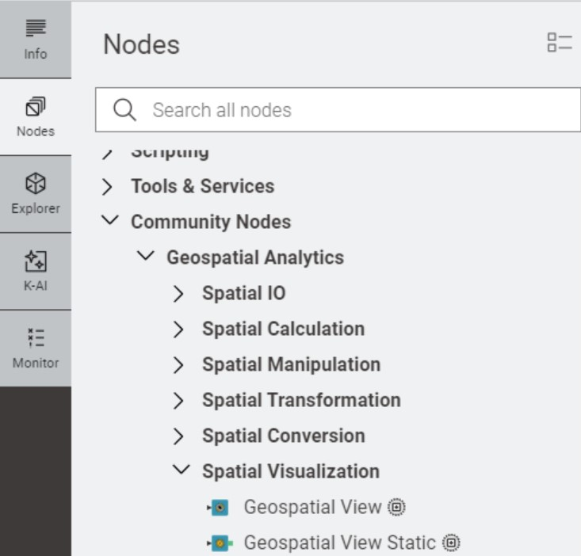
- On Workflow editor window, double-click on
Geospatial Viewnode to make it active.
From Geospatial View pane,
- for Geometry column, if necessary, select geometry from the drop-down list.
- for Includes pane of Marker tooltip columns, includes Thiessen ID and Count/*(ID).
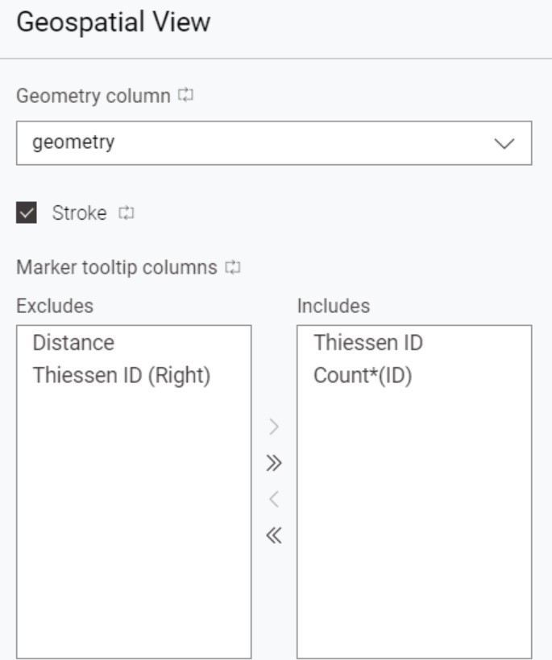
- Scroll downward until Colouring Settings appears.
- For Marker color column, select Cout/*(ID) from the drop-down list.
- For Color map, select a single colour scheme such as copper_r from the drop-down list.
- For Classification method, select Quantiles from the drop-down list.
- For Number of classes, select 4.
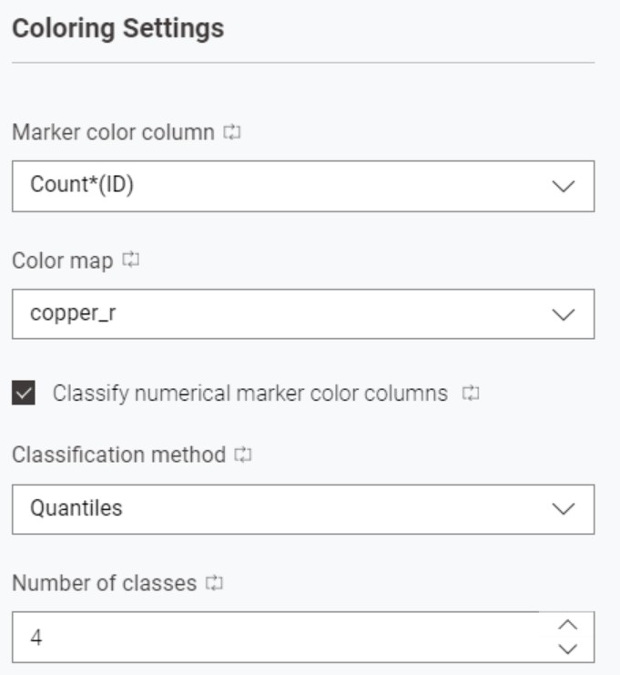
- Scroll downward further until Color Legend Setting.
- Click on the checkbox in front of Show color legend.
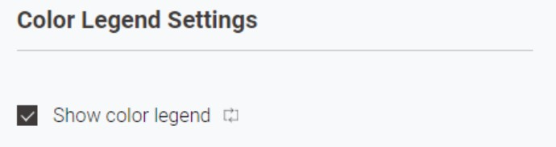
To execute the node,
- click on Apply button then follow by Execute button.
When the computation completed, the interactive choropleth map appears on the Node monitor window.
- From the Node monitor window, click on Open in new window.
Your screen should look similar to the screenshot below.